Auxiliar 11: Dipolos
El dipolo eléctrico es el bloque fundamental para entender la polarización de la materia. Su potencial y campo tienen una geometría característica que aparece en todas las moléculas polares y dieléctricos.
Temas que cubre
- Momento dipolar eléctrico $\mathbf{p} = q\mathbf{d}$
- Potencial y campo eléctrico del dipolo en zona lejana
- Torque $\boldsymbol{\tau} = \mathbf{p}\times\mathbf{E}$ y energía $U = -\mathbf{p}\cdot\mathbf{E}$
- Interacción entre dos dipolos
- Esferas dieléctricas polarizadas: vector de polarización $\mathbf{P}$
- Cargas de polarización: $\rho_p = -\nabla\cdot\mathbf{P}$ y $\sigma_p = \mathbf{P}\cdot\hat{n}$
Conceptos clave
Momento dipolar
$\mathbf{p} = q\mathbf{d}$ apunta de la carga negativa a la positiva. Para distribuciones continuas: $\mathbf{p} = \int \mathbf{r}'\rho(\mathbf{r}')\,dV'$. Unidades: C·m o Debye.
Potencial lejano del dipolo
Para $r \gg d$, el potencial decae como $1/r^2$ (más rápido que el de carga puntual). El campo decae como $1/r^3$. La anisotropía angular distingue los polos.
Torque y energía
En un campo externo $\mathbf{E}$, el torque tiende a alinear el dipolo con el campo. La energía es mínima cuando $\mathbf{p} \parallel \mathbf{E}$ (configuración estable).
Polarización P
$\mathbf{P}$ = momento dipolar por unidad de volumen. Genera cargas de polarización $\rho_p = -\nabla\cdot\mathbf{P}$ y $\sigma_p = \mathbf{P}\cdot\hat{n}$, que se tratan igual que cargas reales.
Fórmulas fundamentales


Qué hay que entender
- Un dieléctrico polarizado es un conjunto de dipolos microscópicos: $\mathbf{P}$ es su promedio macroscópico.
- Si $\mathbf{P}$ es uniforme: $\rho_p = 0$ en el volumen, pero $\sigma_p \neq 0$ en la superficie.
- El campo total de un dieléctrico polarizado = campo generado por $\rho_p$ y $\sigma_p$ en el vacío.
- La esfera uniformemente polarizada: campo interno constante $\mathbf{E} = -\mathbf{P}/(3\varepsilon_0)$.